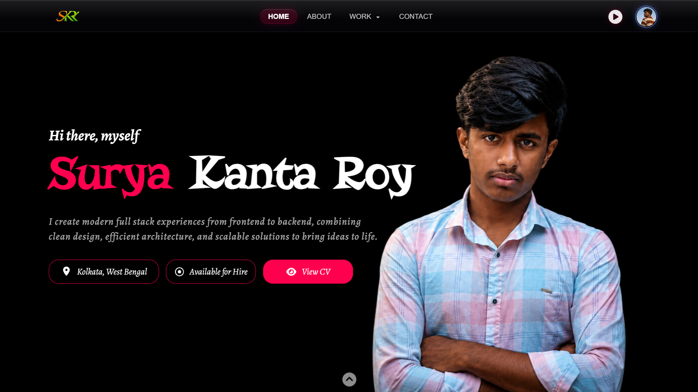

Portfolio Website

Tech Stack
Frontend
Libraries
Deployment & Tools
Overview
This personal portfolio website is a modern, responsive platform designed to showcase my skills, projects, and journey as a Full Stack Developer. It serves as a digital portfolio where visitors can explore my work, learn about my technical expertise, and access live project demonstrations, source code, and professional information through an engaging user experience.
The Problem
Traditional resumes and static portfolio websites often fail to effectively demonstrate a developer's technical skills, creativity, and real-world project experience. Recruiters and clients need an interactive platform that presents projects, technologies, and achievements in a visually appealing and easy-to-navigate manner.
The Solution
I designed and developed a fully responsive portfolio website that combines modern UI design with smooth animations, interactive project showcases, and optimized performance. The platform provides visitors with an immersive experience while allowing them to explore detailed case studies, live demos, GitHub repositories, and my professional background from a single location.
Key Features
• Modern glassmorphism-inspired user interface.
• Fully responsive design for desktop and mobile devices.
• Interactive project showcase with dedicated project pages.
• Smooth animations and premium scrolling experience.
• Professional About, Skills, and Contact sections.
• Direct access to live demos, GitHub repositories, and resume.
• Optimized performance with clean, reusable code structure.
• SEO-friendly and deployment-ready architecture.
Development Process
The portfolio was designed with a strong focus on user experience, performance, and visual aesthetics. It was built using HTML, CSS, and JavaScript while following responsive design principles and modern UI practices. Every section was carefully planned to create a seamless browsing experience, featuring custom animations, reusable components, optimized layouts, and smooth transitions that reflect my frontend development skills.
Challenges
One of the biggest challenges was creating a premium user experience that remained smooth across different screen sizes and devices. Building responsive layouts, implementing custom animations, optimizing image loading, and maintaining consistent performance while preserving visual quality required careful design decisions and extensive testing.
What I Learned
Developing this portfolio strengthened my understanding of responsive web design, advanced CSS animations, modern UI/UX principles, performance optimization, accessibility, and frontend architecture. It also improved my ability to present technical projects professionally while creating an engaging experience for recruiters, clients, and fellow developers.
Future Improvements
Future enhancements include multilingual support, dark and light theme switching, a technical blog, project filtering and search, interactive project timelines, AI-powered chatbot integration, visitor analytics dashboard, and a content management system for easily updating projects and achievements without modifying the source code.